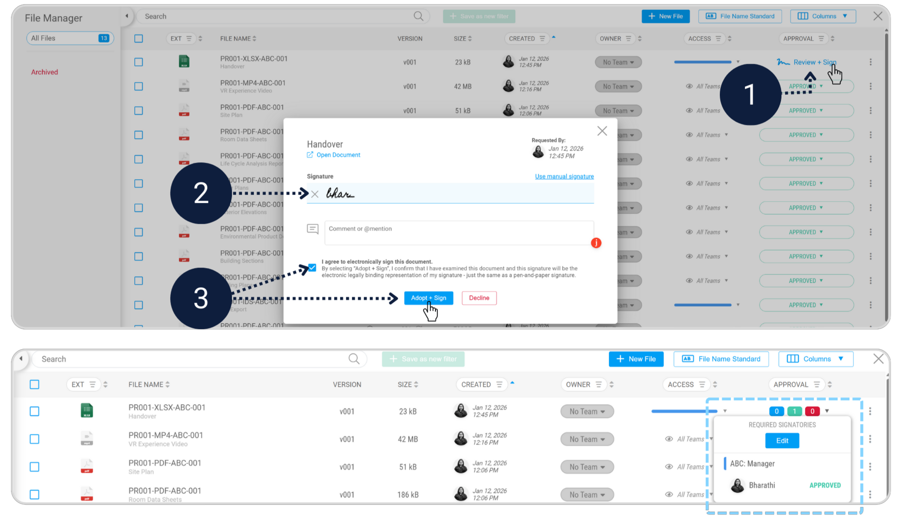
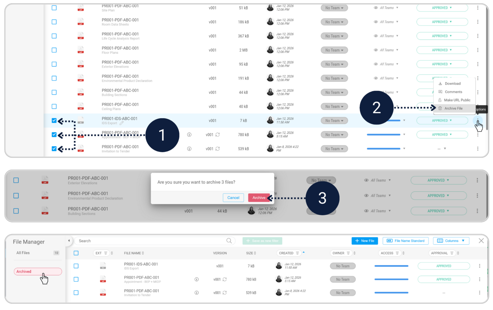
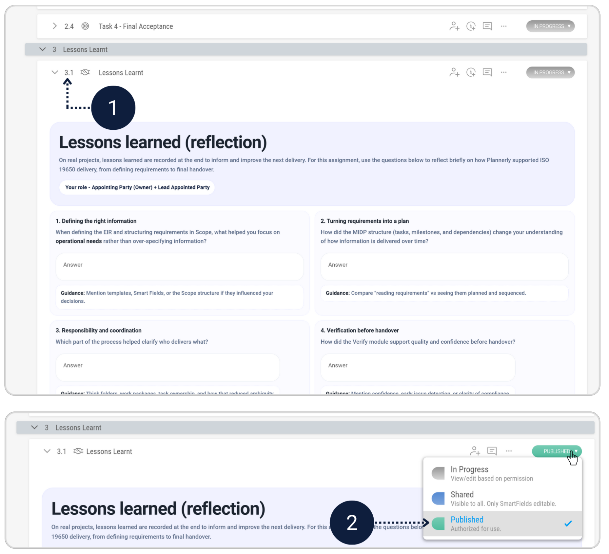
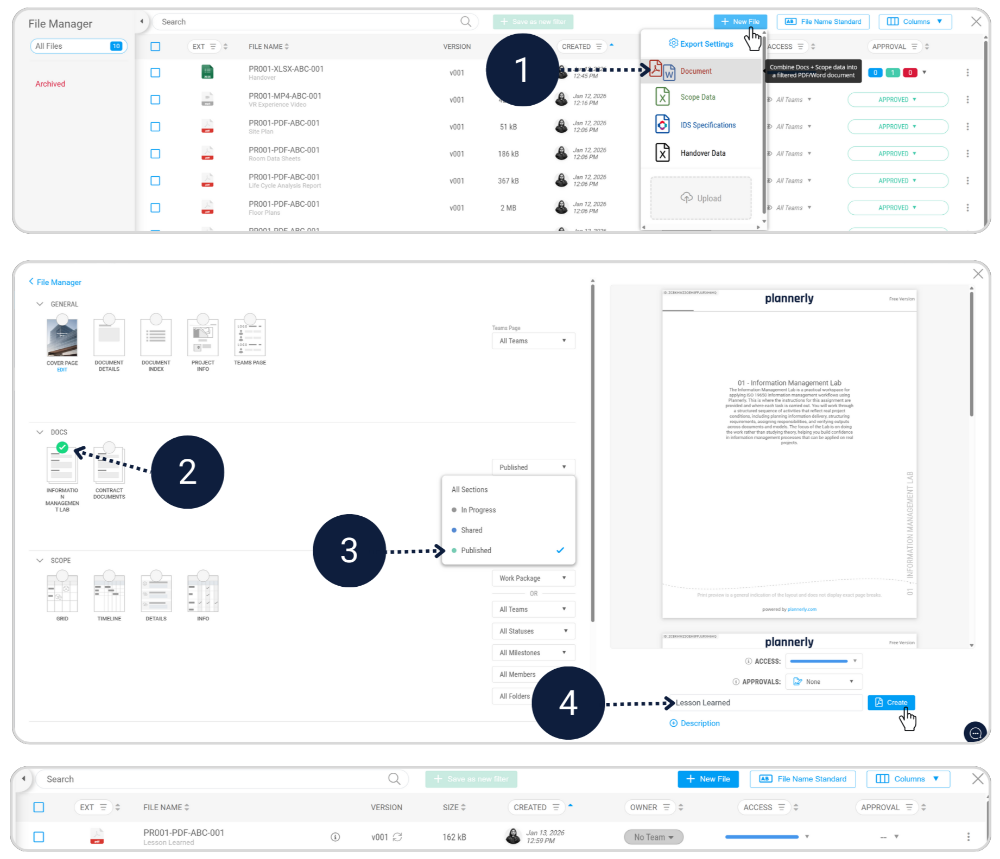
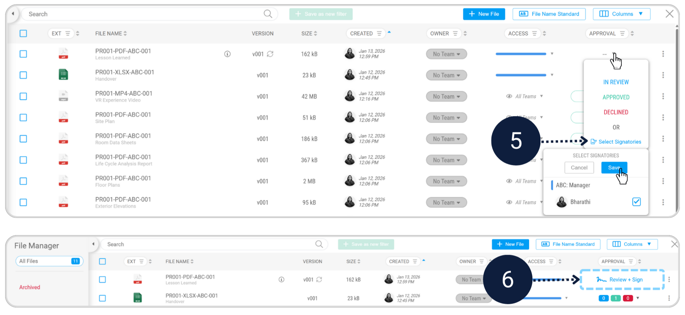
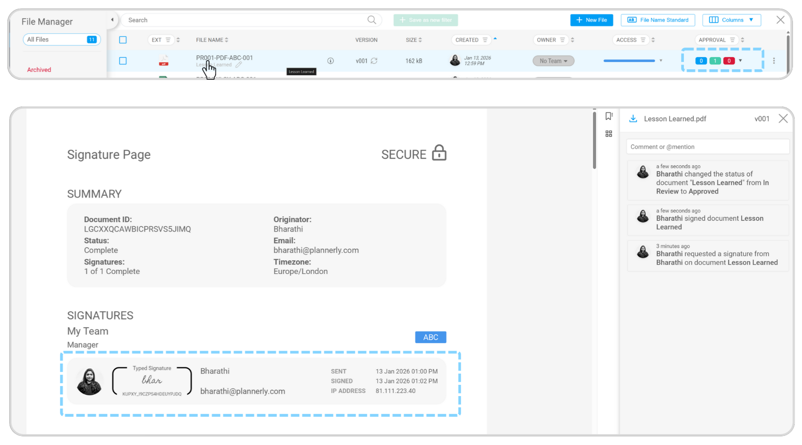

You are now acting as the Appointing Party (Owner). Your job is to confirm the handover is usable, organised, and aligned with the requirements - and to capture what should improve next time.
Final acceptance is where accountability becomes real. The Owner doesn’t just receive files - they accept an Asset Information Model (AIM) that should be usable for operations. Archiving non-operational content keeps the operational view clean, and lessons learned improve the next project.
Confirm operational deliverables are present and organised - then archive non-operational items.
Create a simple sign-off document including lessons learned, and complete e-signature workflow.
As the Owner, you want the handover to be operationally useful. This means the right information is visible for facilities management, and everything else is stored safely but out of the way.
Review the submitted handover data in the File Manager and complete the Review & Sign action to formally accept the handover.
In the File Manager, select files that are not required for the operational phase and click Archive.
Archived files are stored separately, leaving only operational documents visible for day-to-day use.
Lessons learned is how teams improve. It turns “we should do better next time” into something captured, shareable, and repeatable.
Answer the reflection questions in the Lessons Learned section below to capture key takeaways, then change the section status to Published.
In the File Manager, export the Information Management Lab document by filtering to Published sections only.
Once the signature is requested, review and sign to complete the assignment.
  